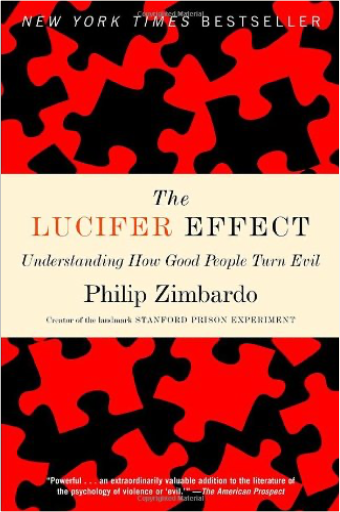

Quantum Mechanics: Concepts and Applications provides a clear, balanced and modern introduction to the subject. Written with the student’s background and ability in mind the book takes an innovative approach to quantum mechanics by combining the essential elements of the theory with the practical applications: it is therefore both a textbook and a problem solving book in one self-contained volume. Carefully structured, the book starts with the experimental basis of quantum mechanics and then discusses its mathematical tools. Subsequent chapters cover the formal foundations of the subject, the exact solutions of the Schrödinger equation for one and three dimensional potentials, time-independent and time-dependent approximation methods, and finally, the theory of scattering.  The Lucifer Effect: Understanding How Good People Turn EvilPhilip Zimbardo What makes good people do bad things? How can moral people be seduced to act immorally? Where is the line separating good from evil, and who is in danger of crossing it? |

Doddridge Library
Collection Total:
417 Items
417 Items
Last Updated:
Apr 21, 2020
Apr 21, 2020
 Made with Delicious Library
Made with Delicious Library